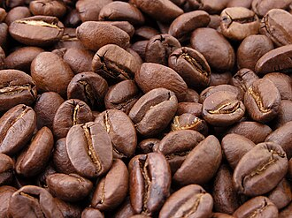
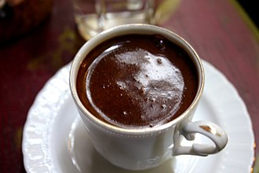
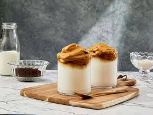
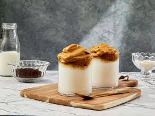
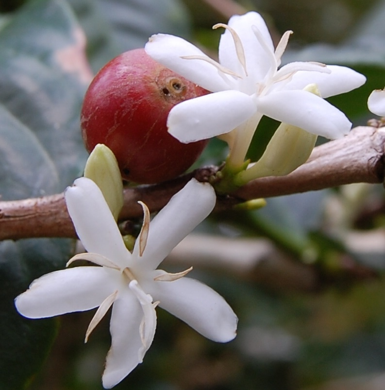
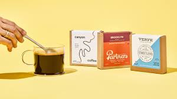
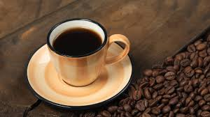

Qahva ( arabchadan qhwẗ [qahwa/gahfa], gollandcha koffie , ingliz qahvasi va eski kofe , kofe [ 6 ] ) — qahva daraxti yoki kofe butasining qovurilgan va maydalangan loviyalaridan tayyorlanadigan ichimlik . Hikoya Asosiy maqola: Kofe tarixi Falastindagi qahvaxona, 1900 yil Qahva kashfiyoti taxminan miloddan avvalgi 850 yilga to'g'ri keladi. e., lekin uning to'liq tan olinishi ko'p asrlar o'tib keldi. Dastlab, tonik sifatida qovurilgan loviya emas, balki to'g'ridan-to'g'ri xom qahva rezavorlari ishlatilgan . Biroz vaqt o'tgach, Yamanda ular qahva mevasining pishgan quritilgan pulpasidan ichimlik tayyorlashni boshladilar va ichimlik - "geshir" (aka qishr ) - "oq Yaman qahvasi" deb nom oldilar [ 7 ] . 14-asrga qadar kofe Efiopiyada yovvoyi o'sgan. Keyin qahva daraxti Arabiston yarim oroliga keltirildi . 16-asrda Usmonlilar imperiyasida keng tarqaldi . XVI asr oxirida yevropalik savdogarlar arab portlaridan qahva sotib olib, Yevropaga olib kela boshladilar . Afsonaga ko'ra, 17-asrning o'rtalarida bir musulmon hoji yashirin ravishda Janubiy Hindistonga qahva donalarini eksport qilgan . U erdan, 17 - asrning oxirida, golland savdogarlari yashirincha kofe daraxtini Java va Sumatraga eksport qilishdi . Bu qahva yetishtirish bo'yicha arab monopoliyasining tugashini belgilab berdi [ 8 ] . Taxminan 1555 yilda Konstantinopolda birinchi jamoat qahvaxonasi ochildi [ 9 ] . Tarixchilarning ta'kidlashicha, vazir Mehmed Ko'prülü bir vaqtlar oddiy odamlardek kiyingan va ular hukumat haqida nima deyishlarini tinglash uchun qahvaxonalarga borgan va ma'lum bo'lishicha, birorta ham yaxshi so'zni eshitmagan, shundan keyin saroy a'zosi hamma qahvaga buyurgan. do'konlar yopilishi va qahva taqiqlanishi [ 10 ] . Angliyada qahvaxonalar uzoq vaqtdan beri erkaklar klublari hisoblangan va 1674 yilda erlarini qahvaxonalardan chiqarib bo'lmasligidan norozi bo'lgan ayollar "Qahvaga qarshi ayollar arizasi" [ 10 ] ni yozdilar .

Afsonaga ko'ra, Evropada kofening keng qo'llanilishi savdogar Yuriy-Frans Kulchitskiy [ 11 ] nomi bilan bog'liq bo'lib , u 1686 yilda Vena jangida Avstriya g'alabasidan so'ng , go'yoki Vena shahrida birinchi qahvaxonani ochgan. o'z uyi . Boshqa ma'lumotlarga ko'ra, Vena va umuman Evropada birinchi qahvaxona 1685 yilda arman Ovannes Astvatsatur (Yevropada Yoxannes Diodato nomi bilan mashhur) tomonidan ochilgan [ 12 ] [ 13 ] [ 14 ] [ 15 ] [ 16 ] [ 17 ]. ] . Gabriel de Klieu qahva daraxti ko'chatini sug'ormoqda 1706 yilda Gollandiyalik mustamlakachilar Amsterdam botanika bog'iga kofe daraxti ko'chatlarini yuborishdi . Bir necha yil o'tgach, Frantsiya qiroliga daraxt ko'chati sovg'a qilindi . Frantsuz dengizchisi Gabriel-Mathyeu de Klieu qirollik issiqxonasidan qahva daraxtining so'qmoqlari va urug'larini o'g'irlab , orolga olib keldi. Martinika , u erda birinchi qahva plantatsiyasiga asos solgan [ 18 ] . Qahva o'simliklari iliq iqlim sharoitida yaxshi ildiz otdi va plantatsiyalar tezda Janubiy Amerika bo'ylab tarqaldi: 1727 yilda Braziliyada , 1730 yilda Yamaykada (mashhur Moviy tog' navining boshlanishi ), 1748 yilda - Kubada , 1760 yilda plantatsiyalar tashkil etilgan. - Gvatemalada , 1779 yilda - Kosta-Rikada [ 19 ] . Shunday qilib, Gaiti orolidan kelgan qahva Evropaga etkazib beriladigan barcha mahsulotlarning yarmidan oshdi [ 20 ] . Rossiyada kofe Tsar Aleksey Mixaylovich davrida paydo bo'ldi va ko'plab kasalliklar, jumladan , migrenlar uchun vosita bo'lib xizmat qildi. Shunga qaramay, bu Pyotr I nomi bilan bog'liq bo'lgan qahva ichish odatidir. U, tarixchilarning fikriga ko'ra, o'ziga yaqin bo'lganlarga majburan "achchiq ichimlik" bergan. Birinchi qahvaxona 1703 yilda ochilgan. 18-asrda evropaliklar dunyoning ko'plab tropik mamlakatlariga kofe ko'chatlarini kiritdilar. Qahva 65 mamlakatda yetishtiriladi. Ko'pchilik qahva Braziliyada (jahon kofe ishlab chiqarishning qariyb 40 foizini tashkil qiladi), Kolumbiya , Vetnam , Indoneziya , Meksika , Hindiston va Efiopiyada ishlab chiqariladi . Kofe etishtirish va iste'mol qilishning jahon xaritasi, 1907 yil Kofe etishtirish va iste'mol qilishning jahon xaritasi, 1907 yil Eriydigan qahva Yangi Zelandiyadan Devid Strang tomonidan ixtiro qilingan va patentlangan (patent raqami 3518) [ 21 ] .
Kofe daraxtlari turlari Qahva ( Coffea ) jinsiga mansub o'simliklarning 90 dan ortiq turlari mavjud , ammo ulardan faqat ikkitasi sanoat miqyosida qo'llaniladi: Coffea arabica L. - arab qahvasi (don turi - "Arabika"); Coffea canephora Pierre ex A.Froehner - Kongo qahvasi (don turi - "robusta"). Ushbu ikki tur, turli hisob-kitoblarga ko'ra, ishlab chiqarilgan qahvaning 98% gacha. Ushbu hajm 69% - Arabica, 29% - Robusta nisbatiga bo'linadi. Qahvaning boshqa turlari jahon ishlab chiqarishining 2% ni tashkil qiladi. Kofe daraxtidan 3,6 kg gacha hosil olinadi, maksimal 5,5 kg [ 22 ] . Arabica Arabica - eng keng tarqalgan qahva turi. Kofe daraxtining turi, Kofe Arabian , bu navning loviyalari olinadi, dengiz sathidan 700 dan 2000 metr balandlikda o'sadi. Fasol, qoida tariqasida, cho'zinchoq shaklga, silliq sirtga, bir oz kavisli S shaklidagi chiziqqa ega bo'lib, unda engil qovurilgandan so'ng, kofe rezavorining yonmagan zarralari odatda qoladi (yuvilgan ishlov berish paytida). Robusta Robusta odatda kamroq tozalangan qahva loviya navi hisoblanadi. Shu bilan birga, u ko'proq kofeinni o'z ichiga oladi va tez-tez espresso aralashmalarida ham qo'llaniladi, bu aralashmani arzonlashtiradi. Ushbu loviya olinadigan kofe daraxti turi , Kongo qahva daraxti tez o'sadi va kofe arabiga qaraganda ko'proq zararkunandalarga chidamli bo'lib, dengiz sathidan taxminan 0 dan 600 m balandlikda, birinchi navbatda Afrikaning tropik mintaqalarida , Hindistonda o'sadi. , Shri-Lanka va Indoneziya. Donalar yumaloq shaklga ega, rangi - och jigarrangdan kulrang-yashil ranggacha.

Boshqa turlar Liberika , Arabusta [ 23 ] va Excelsa kabi boshqa turlar sanoat ahamiyatiga ega emas. Ishlab chiqarish va iste'mol Kofe yetishtiriladigan asosiy hududlar. r: robusta m: robusta va arabica a: arabica Fermentatsiya Quritish Shuningdek qarang: Kofe ishlab chiqarish Ishlab chiqarish 2017 yilda qahva ishlab chiqarish 9,56 million tonnani tashkil etdi, shundan 3,16 million tonnasi Braziliya, 1,77 million tonnasi Vetnam, 840 ming tonnasi Kolumbiya, 654 ming tonnasi Indoneziya, 459 ming tonnasi Efiopiya, 462 ming tonnasi Xondurasga to'g'ri keldi. 350 ming tonna Hindistonga [ 24 ] . Qayta ishlangan mahsulotlarni reeksport qilish Qayta eksport qiluvchilar, xomashyoni ishlab chiqaruvchi mamlakatlardan sotib oladigan va ularni qayta ishlovchi (qovurish, maydalash, eriydigan qahvaga qayta ishlash, chakana savdo uchun qadoqlash) keyinchalik eksport qilish uchun kofe bozorida katta rol o‘ynaydi. Reeksportning uchdan ikki qismidan koʻprogʻi Yevropa Ittifoqiga toʻgʻri keladi, birinchi navbatda Germaniya (720 ming tonna), Belgiya (255 ming tonna), Italiya (190 ming tonna), Niderlandiya (107 ming tonna), Ispaniya (98 ming tonna). ), Polsha (97 ming tonna). Boshqa yirik reeksportchilar: AQSH (176 ming tonna), Shveytsariya (112 ming tonna), Malayziya (94 ming tonna), Xitoy (85 ming tonna), Kanada (75 ming tonna), Rossiya (57 ming tonna) [ 25 ] [ 26 ] . Jahon qahva bozori Xalqaro qahva bozori 2017 yilda 30,4 milliard AQSh dollariga baholandi [ 27 ] . Umumiy hisobda eng yirik qahva eksportchilari Braziliya (4,86 milliard dollar), Vetnam (3,08 milliard dollar), Kolumbiya (2,7 milliard dollar), Germaniya (2,25 milliard dollar) va Shveytsariya (1,74 milliard dollar), import qiluvchilar esa AQSh (6,03 milliard dollar), Germaniya (3,5 milliard dollar), Fransiya (1,94 milliard dollar) va Italiya (1,78 milliard dollar).
 Iste'mol Qahvaning uchdan bir qismi ishlab chiqaruvchi mamlakatlarda, xususan, Braziliya (1,32 million tonna) va Indoneziyada (282 ming tonna) iste'mol qilinadi. Qahvaning eng yirik iste'molchi-importchilari Yevropa Ittifoqi (2,5 million tonna, birinchi navbatda Germaniya, Italiya, Frantsiya), AQSh (1,57 million tonna), Yaponiya (465 ming tonna), Rossiya (271 ming tonna), Kanada (227 ming tonna) hisoblanadi. tonna), Koreya Respublikasi (140 ming tonna), Jazoir (133 ming tonna), Avstraliya (110 ming tonna), Saudiya Arabistoni (86 ming tonna), Turkiya (83 ming tonna), Ukraina (67 ming tonna) [ 28 ] . O'stirish va yig'ish Kofe daraxti shoxi Birinchidan, maxsus o'stirilgan urug'lar to'g'ri miqdorda quyosh nuri va soyani ta'minlaydigan bolalar bog'chasiga ekilgan. Taxminan olti oy o'tgach, ko'chatlar o'g'itlar yordamida ular uchun tuproq tayyorlangan dalaga ko'chiriladi. Qahva ko'chatlari qatorlarga ekilgan, ular orasidagi masofa ko'chatlar va tuproqqa g'amxo'rlik qilish, shuningdek, hosilni yig'ish uchun hisobga olingan holda amalga oshiriladi. O'simliklar faqat yil bo'yi parvarish qilinganda meva beradi, bu daraxtlarni zararkunandalar va kasalliklardan himoya qilish uchun ularni qo'ziqorinlar , kofe zanglari ("to'dasi") kabi fungitsidlar , insektitsidlar , nematsidlar bilan tozalash va muntazam davolashni o'z ichiga oladi. Hemileia vastatrix Berk et Br.), Ojo de gayo ("xo'rozning ko'zi", Mycena citricolor qo'ziqorini), nematod va boshqalar. Qahva daraxtining umri 60-70 yil. Yosh o'simlik ikki yildan keyin meva bera boshlaydi; yiliga bitta qahva daraxtidan taxminan 1-1,5 ming meva olishingiz mumkin. Faqat pishgan rezavorlarni birma-bir yig'ib, qahvani qo'lda yig'ish yaxshidir; Aynan shunday Kolumbiya, Kosta-Rika va boshqa mamlakatlarda amalga oshiriladi, bu erda kompaniyalar mavsumiy ishchilarni maxsus yollaydilar.

Qo'lda terilgan rezavorlar odatda nam holda qayta ishlanadi. Ular urug'lardan pulpaning ko'p qismini olib tashlaydigan silliqlash mashinasiga joylashtiriladi. Keyin urug'lar bir-uch kun davomida tanklarga joylashtiriladi, bu erda tabiiy ravishda yuzaga keladigan fermentlar ta'sirida qolgan pulpa fermentatsiya jarayonida parchalanadi . Shundan so'ng, urug'lar yuviladi, pulpaning oxirgi qoldiqlarini olib tashlaydi. Ulardan ba'zilari quyosh ostida beton teraslarda yoki quritish stollarida quritiladi, ba'zilari esa issiq havo quritgichlaridan o'tkaziladi. Shundan so'ng, pergament va kumush qobiqlardan iborat urug'larni qoplaydigan quruq teri qatlamlari mexanik ravishda olib tashlanadi. Faqat to'liq pishgan rezavorlardan foydalanish bilan birga nam ishlov berish yo'li bilan amalga oshiriladigan fermentatsiya bizga mukammal sifatli silliq qahva olish imkonini beradi. Kofe ishlab chiqaruvchi yirik mamlakat bo'lgan Braziliyada plantatsiyalarda eng ko'p qo'llaniladigan o'rim-yig'im usuli derrica deb nomlanadi. Qahva qo'lda yig'ib olinadi, pishganlik darajasidan qat'i nazar, har bir berryani shoxlardan olib tashlaydi. So‘nggi paytlarda ayrim plantatsiyalar mahsulot sifatini yaxshilash va mehnat unumdorligini oshirish maqsadida yig‘im-terimning mexanizatsiyalashgan va yarim mexanizatsiyalashgan usullariga o‘ta boshladi. Ulardan biri shoxlarni silkitib, rezavorlar erga tushishiga olib keladigan qo'lda pnevmatik asbobdan foydalanishni o'z ichiga oladi. Yiqilgan mevalar rake bilan yig'iladi va barglar, axloqsizlik va tayoqlarni olib tashlash uchun elakdan o'tkaziladi. Keyin qahva gilosi 60 litrli katta savatlarga joylashtiriladi. Elenmiş rezavorlar beton chuqurlikda yoki bu maqsad uchun maxsus mo'ljallangan mashinada yuviladi. Yuvish paytida pishgan mevalar chirishni boshlagan eski quruq mevalardan ajratiladi. Yuvilgan qahva 15-20 kun davomida quyoshda quritilishi uchun katta beton terastaga yotqiziladi. Bu vaqtda, donlar to'g'ri quritilishi uchun ular taxminan har 20 daqiqada aylantiriladi. Ba'zan ularni tezroq quritish uchun mexanik quritgichlar ishlatiladi. Donalarning namligini kuzatib borish kerak, aks holda ular qurib, mo'rt bo'lib, parchalana boshlaydi va shu sababli ularning qiymati pasayadi. Ideal namlik darajasiga erishilganda - 11 dan 12 foizgacha - donalar mexanik qobiqdan tozalanadi. Keyin ular paketlanadi va fabrikalarga yuboriladi, u erda ular tasniflanadi va keyinchalik qayta ishlanadi. Yashil donalarning tasnifi (xom ashyo) Asosiy maqola: Kofe loviya Xalqaro savdoda asosan yashil qahva donalaridan foydalaniladi. Buning sababi, yashil qahva loviyalari qovurilgan va ayniqsa maydalangan qahvaga qaraganda uzoqroq saqlanishi mumkin.
Qahva loviyalarini tasniflashning universal tizimi mavjud bo'lmaganda, har bir ishlab chiqaruvchi mamlakat qahva donalarining navini aniqlash uchun o'z tizimidan foydalanadi, bu odatda quyidagi talablarni o'z ichiga oladi: qahva loviya turi ( Arabika , Robusta ), o'sish hududi, qayta ishlash usuli, hajmi, nuqsonli donalar soni, xorijiy aralashmalar miqdori, namlik. Qayta ishlash Qovurish Asosiy maqola: Qahva qovurish Qovurilgan qahva loviyalari Qovurish yaxshi qahva olishning asosiy bosqichlaridan biridir. Qovurilganda yashil qahva loviyalari hajmi oshadi va rangi yashildan jigarranggacha o'zgaradi. Bir kilogramm qovurilgan qahva tarkibida qahvaning qovurish darajasiga qarab taxminan 4-5 ming dona mavjud. Don qanchalik engil qovurilgan bo'lsa, shunchalik og'irroq bo'ladi. Shunga ko'ra, kilogramm boshiga loviya soni va qahvani qovurish darajasi o'rtasida to'g'ridan-to'g'ri bog'liqlik mavjud. Qahvaning ta'mi ko'plab murakkab aromatik kimyoviy birikmalardan hosil bo'ladi. Qovurish moslamasi qanday aralashmalarga erishmoqchi ekanligiga qarab, optimal qovurish rejimi tanlanadi. Qoida tariqasida, qovurishning 4 darajasi mavjud. Qovurishning eng engil darajasi odatda Skandinaviya deb ataladi, quyuqroq - Vena va undan ham quyuqroq - frantsuz qovurishi. Qovurilganning eng qorong'i darajasi italyan deb ataladi. Evropa qahva an'analarida, qoida tariqasida, quyuq qovurilgan qahva espresso tayyorlash uchun ishlatiladi, engil qovurilgan kofe frantsuz matbuotida ko'proq pishirish uchun ishlatiladi . Qahvani qovurish jarayonida akrilamid , furan va furfural hosilalari hosil bo'ladi , ular sog'likka salbiy ta'sir qiladi [ 29 ] . Silliqlash Asosiy maqola: Qahva donalarini maydalash Qovurilgan loviya qahva maydalagich, ohak yoki tegirmonda maydalanadi. Qahva qanday tayyorlanishiga qarab, loviya ma'lum bir zarracha hajmiga qadar maydalanadi. Dag'al maydalash frantsuz pressida kofe tayyorlash uchun, filtrli qahva uchun o'rtacha , espresso qahvasi va turkchada (cezve) "sharq" qahvasi uchun nozik va eng yaxshi maydalash uchun ishlatiladi .

Maydalangan qahva tezda ta'mi va xushbo'yligini yo'qotadi, shuning uchun foydalanishdan oldin darhol loviya maydalash tavsiya etiladi. Eriydigan qahvaga ishlov berish Qahva hosilining bir qismi eriydigan qahva ishlab chiqarish uchun ishlatiladi . Maxsus hayvonlarni davolash Indoneziya, Filippin, Vetnam va Hindistonning janubida ishlab chiqariladigan Kopi Luvak yoki Kape Alamid navi eng qimmat qahva hisoblanadi, chunki uni tayyorlash uchun kofe mevasi (ichida donli mevalar) musanga oshqozon-ichak traktidan o'tishi kerak. , yoki Osiyo palma daraxti sivetlar oilasiga mansub kichik hayvondir. Fillarning oshqozon-ichak traktidan o'tgan qahva turiga Qora fil suyagi deyiladi . Ichimlik tayyorlash usullari Turk qahvasi Choy paketlariga o'xshash stakanlarda pishirish uchun sumkada maydalangan qahva Shuningdek qarang: Kofe qaynatgich Turka (cezva) - kofe, shu jumladan turk (sharq) qahvasini tayyorlash uchun kepak shaklidagi idish . Ushbu usul uchun qahva donalarining eng yaxshi maydalanishi ishlatiladi. Frantsuz pressi - bu piston-filtrli silindrsimon idish (kolba) ko'rinishidagi qurilma. Maydalangan qahva idishga quyiladi, issiq suv bilan quyiladi va 3-5 daqiqaga qoldiriladi, shundan so'ng frantsuz matbuotining pistoni tushiriladi va tayyor ichimlik stakanlarga quyiladi. Filtrli qahva har xil turdagi filtrlar yordamida tayyorlanadi. Maydalangan qahva filtrga quyiladi va issiq suv bilan quyiladi. Gravitatsiya ta'sirida suv qahva kukuni orqali o'tadi va tayyor ichimlik filtr ostida joylashgan idishga oqib o'tadi. Filtrli qahva tayyorlash jarayonini avtomatlashtirish uchun tomchilatib kofe qaynatgichdan foydalaning . Geyser kofe qaynatgich - suv quyib, qahva maxsus bo'linmaga quyiladi va isitish yuzasiga (pechka) joylashtiriladi. Ichimlik bug' bosimi ostida ko'tarilgan suvni maydalangan qahva bo'linmasidan o'tkazish orqali olinadi. Kapsülli kofe qaynatgich Espresso qahva espresso mashinasida tayyorlanadi . Qahva portafiltrga quyiladi, o'zgartirish bilan siqiladi va qahva qaynatgichlar guruhiga joylashtiriladi. 8-10 bar bosim ostida suv kofe kukuni orqali o'tadi va ichimlik chashka ichiga oqadi. Ushbu tayyorlash usuli umumiy ovqatlanish korxonalarida ( kafelar va boshqalar).
 

Sutli qahva Asosiy maqola: Sutli qahva Sut bilan qahva tayyorlash uchun ko'plab retseptlar mavjud . Organoleptik ko'rsatkichlar Tayyorlangan qahva uchta organoleptik komponentga ega: tana, ta'm va aroma. Ichimlikning tanasi yoki boyligi qahva donalarining xususiyatlariga, qovurish va maydalash darajasiga va tayyorlash usuliga bog'liq. Janubiy Amerikada yetishtirilgan qahva donalarining eng boy navlari quyuq qovurilgan va o'rta yoki mayda maydalangan. Tayyorlangan qahvaning ta'mi va xushbo'yligi ham aytib o'tilgan komponentlarga bog'liq, lekin ko'proq qahva tayyorlash xususiyatlari orqali namoyon bo'ladi. Espresso kislotalilikni ko'proq chiqarishga yordam beradi, mocha (yoki Neapolitan qahva qaynatgichida tayyorlangan qahva) esa shokolad rangini berishi mumkin. Sog'likka ta'siri Qahvaning inson umrining davomiyligiga ta'sirini o'rganish Shvetsiya qiroli Gustav III ning mashhur tajribasi bilan bog'liq bo'lib , u 18-asrning boshlarida amalga oshirilgan deb ishoniladi. O'lim jazosiga mahkum etilgan ikki egizak uchun, bir aka-uka har kuni uch krujka qahva, ikkinchisi esa bir xil miqdorda choy ichish sharti bilan umrbod qamoq jazosiga almashtirildi. Ta'kidlanishicha, ikkala sub'ekt ham etuk yoshda vafot etgan. Qahvaning ko'plab foydali ta'siri uning tarkibidagi antioksidantlarga bog'liq . 2005 yilda AQShda o'tkazilgan tadqiqotga ko'ra, organizm har kuni oziq-ovqatdan oladigan fiziologik antioksidantlarning aksariyati qahvadan keladi. Biroq, bu kofe tarkibida juda ko'p miqdorda antioksidantlar mavjudligi bilan emas, balki amerikaliklar juda kam meva va sabzavotlar iste'mol qilishlari , lekin ko'proq va ko'proq qahva iste'mol qilishlari bilan bog'liq [ 30 ] . Yashil qahvalarda antioksidant moddalar ayniqsa yuqori. Nemis olimlari tomonidan olib borilgan tadqiqot shuni ko'rsatadiki, bu antioksidantlar hujayralarni himoya qiladi: Tadqiqotchilar har kuni yashil va qovurilgan qahva aralashmasidan uch-to'rt stakan ichish DNKning oksidlovchi shikastlanishini 40% ga kamaytirishini va shu bilan hujayra himoyasini yaxshilashini aniqladilar. Olimlar, bu ta'sir kofe [ 31 ] ko'p sog'liq foyda tushuntiradi, deb gumon . 2016 yilda qahvaning sog'likka ta'siri bo'yicha qiyosiy tahlil o'tkazildi, unga ko'ra foyda (yoki zararsiz yoki foydasiz ta'sir - nol ta'sir ) qahva keltiradigan zarardan aniq ustun turadi [ 32 ] . Mo''tadil qahva iste'moli umumiy o'limni kamaytiradigan dalillar mavjud [ 33 ] [ 34 ] [ 35 ] .
2018 yil oxirida o'rtacha miqdordagi qahvaning inson tanasining ko'plab tizimlari - miya, mushaklar, ichki organlarga ijobiy ta'sirini ko'rsatadigan tibbiy statistik tadqiqotlar nashr etildi. Qahvaning foydali xususiyatlari ham kofein, ham boshqa moddalar, xususan, polifenollar bilan bog'liq. Nisbatan kattaroq ta'sir quyuq qovurilgan qahva uchun topilgan [ 36 ] . Boshqa tadqiqotlar shuni ko'rsatdiki, quyuq qovurilgan qahva foydali fenolik birikmalar miqdorini yarmidan ko'proq kamaytirishga olib keladi, shuningdek, ichimlikning antioksidant xususiyatlarini kamaytiradi [ 37 ] . Yurak-qon tomir tizimi O'rtacha qahva iste'moli koroner yurak kasalligi uchun xavf omili emas [ 38 ] . Ko'pgina tadqiqotlar koroner yurak kasalligining qahva iste'moli bilan bog'liqligini ko'rsatmadi [ 39 ] [ 40 ] [ 41 ] . 2012 yilgi meta-tahlil shuni ko'rsatdiki, o'rtacha miqdorda qahva ichgan odamlarda yurak etishmovchiligi kamroq bo'lgan , eng katta ta'sir kuniga to'rt stakandan ko'proq ichganlarda topilgan [ 42 ] . 2014 yilgi meta-tahlil shuni ko'rsatdiki, yurak-qon tomir kasalliklari, masalan, koronar arteriya kasalligi va insult , kuniga uch-besh chashka kofeinsiz qahva ichganda kamroq bo'ladi , lekin kuniga besh stakandan ko'proq ichish ehtimoli ko'proq [ 43 ] . 2016 yilgi meta-tahlil shuni ko'rsatdiki, kofe iste'moli miyokard infarkti [ 44 ] bo'lgan bemorlarda o'lim xavfini kamaytirish bilan bog'liq . 21-asrda kofe iste'mol qilmaslik yoki o'rtacha kunlik gipertenziya rivojlanish xavfiga ta'siri bir nechta sharhlarda baholandi. 2019 yilgi ko'rib chiqish shuni ko'rsatdiki, kuniga bir-ikki stakan ichish gipertenziya xavfiga hech qanday ta'sir ko'rsatmaydi , kuniga uch yoki undan ko'p stakan ichish esa xavfni kamaytiradi [ 45 ] , bu 2017 yilgi tahlilga mos keladi, bu esa 9% ga kamayganini ko'rsatdi. uzoq muddatli foydalanish bilan gipertenziya xavfi [ 46 ] . 2018-yilda o'tkazilgan yana bir ko'rib chiqish shuni ko'rsatdiki, kofe iste'moli kuniga bir stakanga ko'payib, 8 stakangacha ko'payganida, hech qanday qahva ichmaydigan odamlar bilan solishtirganda gipertoniya xavfi 2% ga kamaydi [ 47 ] . Aksincha, 2011 yilgi ko'rib chiqish shuni ko'rsatdiki, kuniga bir-uch chashka qahva ichish gipertenziya [ 48 ] rivojlanish xavfini biroz oshirishi mumkin . Klinik amaliyotda yurak-qon tomir kasalliklarining oldini olish bo'yicha Evropa kardiologiya jamiyatining 2021 yilgi yo'riqnomasida shunday deyilgan: "Filtrlanmagan qahva tarkibida LDL xolesterin darajasini oshiradigan kafestol va kahveol mavjud va uni iste'mol qilganda yurak-qon tomir kasalliklaridan o'lim xavfini 25% ga oshirishi mumkin. kuniga stakan. Filtrlanmagan qahva qaynatilgan, yunon va turk qahvalari , shuningdek, espressoning ayrim turlarini o'z ichiga oladi . O'rtacha qahva iste'moli (kuniga 3-4 stakan) ehtimol zararli emas va hatto o'rtacha darajada foydali bo'lishi mumkin" [ 49 ] .
Muntazam qahva iste'mol qilish insulin sezgirligini oshirishi mumkin [ 50 ] va 2-toifa diabet rivojlanish xavfini kamaytiradi [ 51 ] [ 52 ] [ 53 ] [ 54 ] [ 55 ] . Asab tizimi Qahva markaziy asab tizimining ishlashiga ta'sir qiladi va harakatning o'tkir va surunkali bosqichlarini aniq ajratish mumkin [ 56 ] . Qahva qisqa muddatli e'tibor va konsentratsiyani yaxshilaydi, ayniqsa, odam charchaganida [ 57 ] [ 58 ] . Bir chashka qahva e'tiborni, mahsuldorlikni, xotirani va kayfiyatni yaxshilaydi [ 59 ] . Purin alkaloidlari ( kofein , teobromin va teofillin ), kuniga 1000 mg darajasida muntazam ravishda iste'mol qilinganda, odamning doimo ularga muhtoj bo'lishiga olib keladi, bu spirtli ichimliklarga qaramlikni eslatadi [ 60 ] . Qahvada 1500 mg/l gacha kofein mavjud . Kofein migren bosh og'rig'i uchun samarali bo'lib, ba'zi og'riq qoldiruvchi vositalarning (xususan, aspirin va paratsetamol ) ta'sirini kuchaytiradi [ 61 ] va Parkinson [ 62 ] va Altsgeymer kasalliklari [ 63 ] [ 64 ] rivojlanish xavfini kamaytirishi mumkin . 2018 yilda qahva ichish va neyrodegenerativ kasalliklarning rivojlanish ehtimolini kamaytirish o'rtasidagi bog'liqlikni tasdiqlovchi va buning mexanizmini tushuntiruvchi maqola nashr etildi: qahva loviyalarini qovurish jarayoni natijasida paydo bo'lgan fenilindanlar, oqsillarning paydo bo'lishining oldini oladi. Altsgeymer va Parkinson kasalliklarining patogenezi. Shu bilan birga, quyuq qovurilgan qahva ko'proq fenilindanlarni o'z ichiga oladi va o'rta va engil qovurilgan qahva [ 65 ] [ 36 ] bilan solishtirganda kuchliroq neyroprotektor hisoblanadi . Ovqat hazm qilish tizimi 1999 yilgi ko'rib chiqish shuni ko'rsatdiki, qahva oshqozon bezovtalanishiga olib kelmaydi, lekin oshqozon-ichak reflyuksini rag'batlantirishi mumkin [ 66 ] . Qahva ichish me'da shirasining va gastrin gormonining ko'payishiga olib keladi . Shuning uchun, kofe ichishning eng ko'p bildirilgan ta'siri yurak urishidir . Qayta oqim darajasi va davomiyligiga qarab, reflyuks ezofagit rivojlanishi ham mumkin . Har qanday holatda, kofeinli qahva me'da shirasining ishlab chiqarilishini va o't pufagining qisqarishini rag'batlantiradi [ 67 ] . Vena universitetining Kimyo bo'limining Oziqlanish fiziologiyasi va fiziologik kimyo instituti va Potsdam-Rebryukke shahridagi Germaniya oziqlanish tadqiqotlari instituti a'zolaridan iborat tadqiqot guruhi qahva ichish paytida oshqozon kislotasi ishlab chiqarishni o'rganishdi. Ular oshqozon kislotasi ishlab chiqarish darajasi qahvaning achchiqligi bilan tartibga solinishini aniqladilar. Achchiq retseptorlari ovqat hazm qilish traktining turli joylarida, masalan, oshqozon va og'izda joylashgan . Og'izdagi retseptorlar achchiq ta'm hosil qiladi. Agar faqat oshqozondagi retseptorlar faollashtirilsa, bu oshqozon kislotasi ishlab chiqarishni ko'payishiga olib keladi. Boshqa tomondan, og'iz bo'shlig'idagi retseptorlarning faollashishi me'da shirasining ishlab chiqarilishining pasayishiga olib keladi [ 68 ] [ 69 ] .

Qorin bo'shlig'i , kolorektal va ginekologik jarrohlikdan so'ng tuzalib ketgan odamlarda o'tkazilgan klinik tadqiqotlarning ikkita sharhi shuni ko'rsatdiki, qahva ichish operatsiyadan keyingi gastrointestinal funktsiyani yaxshilashda xavfsiz va samarali bo'lgan [ 70 ] [ 71 ] . Boshqa tadqiqotlar shuni ko'rsatdiki, qahva sirozi [ 72 ] xavfini sezilarli darajada kamaytiradi va ich qotishi [ 73 ] insidansını bir oz kamaytiradi . Siydik chiqarish tizimi Ko'pincha ommaviy axborot vositalarida [ manba noma'lum 317 kun ] , shuningdek, ba'zi shifokorlar tomonidan kofe tanadan suvni olib tashlashi va shuning uchun suyuqlik iste'molining bir qismi hisoblanmasligi kerakligi aytiladi. Biroq, bu bayonot ilmiy asosga ega emas. Zamonaviy tadqiqotlarga ko'ra, qahvadagi kofein ozgina diuretik ta'sirga ega, bu ichimlikning o'zida suyuqlik bilan qoplanadi [ 74 ] [ 75 ] [ 76 ] . Umuman olganda, kofeinli ichimliklar odatdagi suvga o'xshash hidratsiya darajasini ko'rsatadi [ 74 ] [ 75 ] [ 76 ] [ 77 ] . Muskul-skelet tizimi Suv o'z ichiga olgan har qanday ichimlik singari, qahva ham siydik orqali chiqariladigan kaltsiy yo'qotilishini biroz oshiradi. Biroq, hisob-kitoblar shuni ko'rsatadiki, bunday yo'qotishlar minimal [ 78 ] [ 79 ] . Umuman olganda, o'rtacha qahva iste'moli tanadagi kaltsiy darajasiga yoki suyak zichligiga ta'sir qilmaydi [ 78 ] [ 79 ] . Kofeinning mumkin bo'lgan yon ta'sirini tizimli ko'rib chiqish shuni ko'rsatdiki, kuniga 400 mg gacha kofein iste'mol qilish (taxminan 3-4 chashka qahva) suyak sog'lig'iga hech qanday ta'sir ko'rsatmaydi [ 79 ] . Qahva aerobik jismoniy mashqlar (velosiped, yugurish) natijalarini yaxshilaydi [ 36 ] . Endokrin tizimi Kofein buyrak usti bezlari tomonidan adrenalin ishlab chiqarishni rag'batlantiradi . Adrenalin ta'siri ostida qon bosimi va yurak urish tezligi oshadi . Adrenalin ishlab chiqarilishi stress natijasimi yoki qahva iste'molining natijasimi, kofein stress gormonlari orqali va asab tizimining reaktsiyasi bilan birgalikda insulin sekretsiyasini ko'payishiga olib keladi , bu esa o'z navbatida qon shakar darajasiga ta'sir qiladi . Bundan tashqari, kofe (kofein) haddan tashqari iste'mol kortizol (stress gormoni) [ 80 ] ortiqcha ishlab chiqarish olib kelishi mumkin . Orzu Sleep jurnalidagi maqolaga ko'ra , qahvaning rag'batlantiruvchi va konsentratsiyani rag'batlantiruvchi ta'siridan to'liq foydalanish uchun ertalab to'liq chashka qahva o'rniga kun davomida ko'plab kichik qultumlar qahva ichish mantiqan to'g'ri keladi [ 81 ] . Shunday qilib, kofein miyadagi uyqu markazlariga ancha samarali ta'sir ko'rsatadi. Qahva iste'molini uzoqroq vaqt davomida teng ravishda tarqatish strategiyasi, ayniqsa, tunda ishlaydigan odamlar uchun foydalidir: ular diqqatni jamlash qobiliyatini saqlab qolish bilan birga hushyor turishni osonlashtiradi [ 81 ] . Kunduzi va kechqurun qahva ichish uyqu sifatiga ta'sir qilishi mumkin [ 82 ] .

Onkologik kasalliklar 2016 yil iyun oyidan Xalqaro Saraton tadqiqotlari agentligi (IARC) qahvani potentsial kanserogen deb hisoblamaydi va shuning uchun uni saraton kasalligiga olib keladigan moddalar ro'yxatidan olib tashladi [ 83 ] . Umuman olganda, kofe iste'molining saraton xavfiga ta'siri bo'yicha tadqiqotlar hech qanday ta'sir ko'rsatmaydi [ 84 ] [ 85 ] [ 86 ] yoki ba'zi saraton kasalliklari, ayniqsa jigar saratoni [ 87 ] [ 88 ] xavfini kamaytiradi . Prostata saratoni va qahva iste'moli bilan bog'liq adabiyotlar qahva iste'moli bilan bog'liq bo'lgan xavf yoki foyda bilan bog'liq bo'lgan noaniqdir [ 84 ] . Biroq, Tongji universiteti kasalxonasi 13 ta tegishli tadqiqotlarni tahlil qilib, kuniga ikki qo'shimcha chashka qahva prostata saratoni xavfini 2,5% ga kamaytiradi degan xulosaga keldi [ 89 ] . 2020 yilda saraton va qahva iste'moli o'rtasidagi bog'liqlik bo'yicha oldingi 28 ta meta-tahlillarning katta meta-tahlili nashr etildi. 28 ta ilmiy maqola ko'rib chiqildi, ularning har birida mavzu bo'yicha bir nechta ilmiy nashrlar ko'rib chiqildi. Mualliflar qahva ichmaydiganlarga qaraganda o‘rtacha darajada kofe ichuvchilarda jigar saratoni yoki bachadon shilliq qavati saratoni bilan kasallanish xavfi pastroq ekanligini aniqlashdi. Meta-tahlil qahva ichuvchilarning o'zlari uchun boshqa mumkin bo'lgan foydalarni aniqladi. Misol uchun, oddiy qahva ichuvchilarda kofe ichmaydiganlarga qaraganda malign melanoma , og'iz karsinomasi yoki tomoq saratoni rivojlanish xavfi kamroq . Qahva ichuvchilar orasida siydik pufagi saratoni xavfi yuqori. Biroq, saratonning ushbu turlari bo'yicha ma'lumotlar hali ham aniq emas. Shuningdek, "iste'mol qilish miqdori va chastotasi, qahva turi va tayyorlash turi, ya'ni sut yoki shakar qo'shilishi" saraton rivojlanishiga qanday ta'sir qilishi hali to'liq tushunilmagan. Ammo tug'ilmagan bola uchun homiladorlik paytida qahva ichish zararli bo'lishi mumkin: aniq dalillar aniqlanganki, homiladorlik davrida ko'p qahva ichgan ayollarning bolalarida o'tkir lenfoblastik leykemiya [ 88 ] rivojlanish xavfi ortadi . Bir qator boshqa oziq-ovqatlar singari, qahvalarda ham saraton kasalligini rivojlanishida gumon qilingan furan deb ataladigan modda mavjud [ 90 ] . Qahva kabi furanning oz miqdorini uzoq vaqt davomida iste'mol qilish inson salomatligi uchun xavf tug'diradimi yoki yo'qmi, hali yaxshi o'rganilmagan. Xavflarni baholash bo'yicha Germaniya Federal instituti ilmiy adabiyotlarni ko'rib chiqdi va oziq-ovqat mahsulotidagi furan bilan ifloslanishi sog'liq uchun zararli ekanligi haqida hech qanday dalil topmadi [ 91 ] . Die Zeit haftalik gazetasida chop etilgan maqolaga ko'ra , 23 IARC ekspertlari tomonidan 1000 dan ortiq tadqiqotlarni baholagandan so'ng, qahva ichuvchilarda "saraton xavfining etarli dalillari" yo'q edi [ 92 ] .
Alyuminiy zaharli metall bo'lib, inson organizmiga prooksidant , mutagen va sitotoksik ta'sir ko'rsatadi [ 93 ] . Tanadagi alyuminiyning mavjudligi odamlarda bir qator sog'liq muammolariga, jumladan, saratonga olib kelishi mumkin [ 94 ] . Ma'lum bo'lishicha, alyuminiyning eng ko'p miqdori kofeinsiz qahvalarda mavjud . Bundan tashqari, kofeinsiz qahva Shveytsariya (suv) kofeinsizlantirish jarayonidan o'tib, kapsulalarga qadoqlanganda, uning alyuminiy tarkibi sezilarli darajada oshadi [ 37 ] [ 95 ] . Homiladorlik Kofein platsentadan o'tib, homila yurak tezligini oshirishi mumkin . Qahva ichish ham platsentaga qon oqimini kamaytirishi mumkin, bu esa anemiya xavfini oshirishi mumkin . Tadqiqotlar shuni ko'rsatdiki, homiladorlik paytida ko'p miqdorda kofein iste'mol qilish (kuniga 7 yoki undan ko'p stakan) erta tug'ilish , kam vaznli chaqaloqlar, tushish va o'lik tug'ilish xavfini oshiradi. Mutaxassislar homiladorlik paytida qahva ichmaslikni tavsiya qiladi [ 96 ] . 2-toifa diabet Bir milliondan ortiq ishtirokchilarni qamrab olgan 28 ta istiqbolli kuzatuv tadqiqotlarining tizimli tahlili va meta-tahlilida kuniga iste'mol qilingan har bir qo'shimcha chashka kofeinli va kofeinsiz qahva 2-toifa diabet rivojlanish xavfini 9% va 6% ga kamaytirish bilan bog'liq. mos ravishda [ 97 ] . Dori vositalarining o'zaro ta'siri Kofein bir vaqtning o'zida qabul qilingan dorilar bilan o'zaro ta'sir qilishi mumkin, shuning uchun har bir dorini qahva bilan qabul qilish mumkin emas. Xususan, kofein ergotaminning so'rilishini o'zgartirishi mumkin ; kofeinning og'iz kontratseptivlari bilan o'zaro ta'siri ba'zida engil ruhiy kasalliklarga olib keladi. Antipsikotiklar ( haloperidol , aminazin ) qahva bilan aralashtirilganda , ularning so'rilishi sekinlashadi. Qahva ampitsillin va siydik bilan chiqariladigan boshqa moddalarni filtrlash orqali tanadan tezda olib tashlanishiga olib keladi ; qonda teofillin kontsentratsiyasini oshiradi , uning jigarda katabolizmini sekinlashtiradi. Kofein asetilsalitsil kislotasi va paratsetamolning analjezik ta'sirini kuchaytiradi [ 98 ] :150 . Kimyoviy tarkibi 20-asrning boshlarida nemis kimyogari Erdmann kofe donalaridan yog‘ ajratib oldi, u qahvaga o‘zining xushbo‘y hidini beradi, uni “kafeol” [ 99 ] deb atagan . Erdmann kafeolning o'nga yaqin tarkibiy qismini ajratib olishga muvaffaq bo'ldi. 1967 yilda amerikalik olimlar F. Gotschi va M. Wintergod molekulyar distillash , spektrofotometriya va gaz xromatografiyasi [ 99 ] yordamida 220 dan ortiq komponentlarni ajratib oldilar . Qahva 1000 dan ortiq kimyoviy birikmalarni o'z ichiga oladi va ularning molekulyar va fiziologik ta'siri oziq-ovqat kimyosi [ 100 ] [ 101 ] faol tadqiqot sohalari hisoblanadi . Qahva tarkibidagi kimyoviy birikmalarni aniqlashning ko'plab usullari mavjud. Kimyoviy birikmalar o'rtasidagi o'zaro ta'sirlar, organik kimyoning asosiy toifalari ( oqsillar , uglevodlar , lipidlar va boshqalar) kabi taksonomiyaning tez-tez uchraydigan sohasidir . Qahvaning xushbo'yligi va ta'mini beruvchi aralashmalar orasida yashil qahvalarda mavjud bo'lgan 300 ga yaqin kimyoviy moddalar va qovurilganidan keyin qahvalarda topilgan 850 dan ortiq kimyoviy moddalar aniqlangan [ 102 ] . Qahvaning kimyoviy murakkabligi turli sharoitlarda yuzaga keladigan o'zaro ta'sirlarning ko'pligi bilan bog'liq. Bundan tashqari, qahva tarkibida xlorogen kislotalar , gidroksisinnamik kislotalar , kofein va melanoidinlar [ 103 ] kabi Maillard reaktsiyasi mahsulotlari kabi ko'p miqdorda antioksidantlar mavjud . Alkaloidlar va kofeoilkinik kislotalar kabi kimyoviy guruhlar keng tarqalgan insektitsidlardir ; ularning qahva sifati va ta'miga ta'siri ko'pchilik tadqiqotlarda o'rganilgan [ 104 ] .
Ba'zi hollarda qahvaning fiziologik ta'siri juda yaxshi hujjatlashtirilgan (masalan, kofeinning ogohlantiruvchi ta'siri). Shaxsiy kimyoviy moddalar yoki murakkab sinergiyalar haqida onlayn da'volar [ aniqlanmagan 317 kun ] , masalan, kariesning oldini olish (alkaloid trigonelinning spekulyativ, ammo isbotlanmagan ta'siri, biriktirilgan bakteriyalar bilan in vitro tadqiqotlarida aniqlangan, hech qanday yoki sog'liq uchun oqibatlarga in vivo tadqiqotlar o'tkazilmagan ), oldini olish buyrak toshlari va boshqalar ko'pincha qat'iy ilmiy asosga ega emas. Maxsus kafe Asosiy maqola: Kofe do'koni Kofe do'koni - tashrif buyuruvchilarga birinchi navbatda yangi tayyorlangan qahva, shuningdek, tegishli mahsulotlar taklif etiladigan ixtisoslashgan kafe ; odatda - har xil turdagi shirin xamir ovqatlar, pirojnoe va pishiriqlar . Klassik qahvaxonalar tushlik yoki kechki ovqat uchun to'liq stol taklif qilmaydi va ba'zan sendvichlar va shunga o'xshashlar ko'rinishidagi engil atıştırmalıklar taklif qilish bilan cheklanadi . Kofe do'konlari an'anaviy ravishda do'stona uchrashuvlar va yoqimli muloqot uchun joy yoki tez va oson nonushta qilish yoki shunchaki gazak qilish imkoniyati sifatida xizmat qilgan. Kofe sevuvchilar Noel Rayli Fitch Yevropaning buyuk adabiy kafelarida bir qancha mashhur qahva ishqibozlarini sanab o‘tadi . Kitobda u Volter kuniga 50 chashka qahva ichganligi va juda hurmatli 83 yoshiga qadar yashaganligi haqida xabar beradi [ 106 ] . Qahvaning ashaddiy muxlisi Lyudvig van Betxoven bo'lib , uni har doim 60 donadan tayyorlagan [ 106 ] . Qahvani soxtalashtirish Qahvaning barcha turlari soxtalashtiriladi - kofe donalari, maydalangan qahva va eriydigan qahva. Qahvaning qimmat navlari arzonroq va past navli yoki boshqa mahsulotlar bilan almashtiriladi. Maydalangan qahva bilan hindibo, boshoq, kashtan, qovurilgan javdar, kuygan arpa, solod, loviya, no'xat, sabzi, lavlagi, apelsin loviyalari, qovurilgan xurmo chuqurlari, anjir, kuygan shakar, kofe loviya qobig'i va boshqalarni aralashtirish mumkin. Qalbaki pul sotuvchilar o'z mahsulotlariga kimyoviy sintez natijasida olingan sun'iy kofein qo'shadilar, tabiiy qahvalarda kofein boshqa moddalar bilan organik ravishda birlashtiriladi. Soxta qahvaning ta'mi "bo'sh", kislotali yoki achchiq bo'lishi mumkin. Bunday ichimlik mazasiz va nosog'lom bo'lishi mumkin [ 107 ] . Soxta Arabica loviya Xalqaro Qahva Tashkiloti ma'lumotlariga ko'ra , Arabica loviyalari odatda Robusta loviyalariga qaraganda ancha qimmatroq sotiladi. Narxlar farqi vijdonsiz savdogarlarga Arabica loviyalarini Robusta loviyalariga qisman yoki to'liq almashtirish orqali iqtisodiy foyda olish imkoniyatini beradi. Buyuk Britaniyada o'tkazilgan yaqinda o'tkazilgan ilmiy tadqiqotda 100% Arabica deb belgilangan 60 xil qadoqlangan loviya namunalaridan 8 tasida 1% Robusta, 6 tasida 10% dan ortiq Robusta va bitta namunada 33% Robusta [ 108 ] bor edi .
 